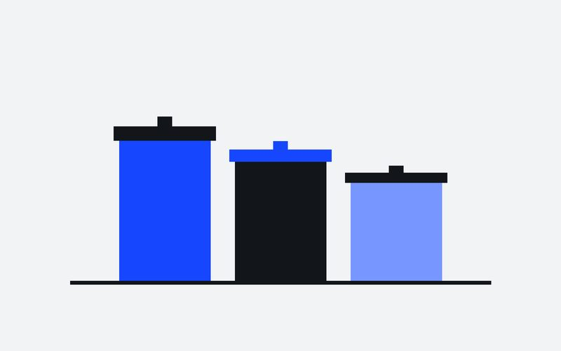
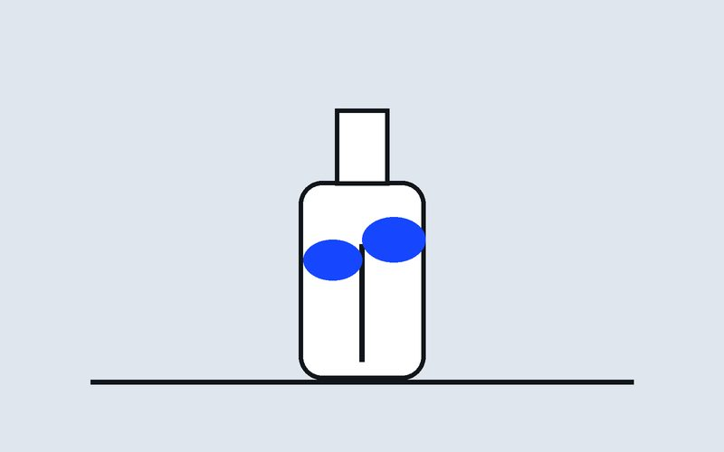
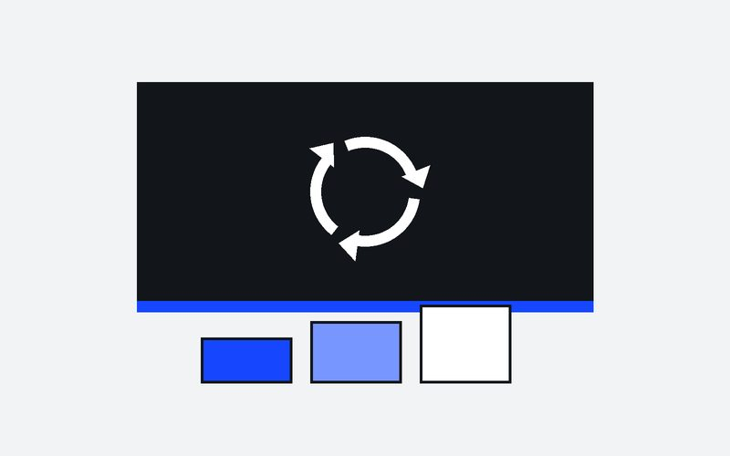
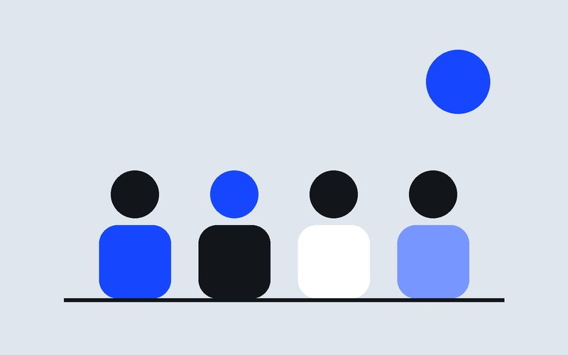

Coleta Seletiva Comunitária
Pontos de entrega nos bairros e rotas de coleta feitas junto com cooperativas de catadores.
Impacto: 180 toneladas desviadas de aterros em 2024.
Três frentes que se completam: separar, reaproveitar e educar. Todos têm indicadores públicos de resultado.

Pontos de entrega nos bairros e rotas de coleta feitas junto com cooperativas de catadores.
Impacto: 180 toneladas desviadas de aterros em 2024.

Cursos gratuitos de reparo, costura e transformação de materiais descartados em novos produtos.
Impacto: 60 pessoas formadas por ano.

Aulas e atividades práticas sobre consumo consciente em escolas públicas.
Impacto: 12 escolas e 3.200 estudantes atendidos.
Você pode doar seu tempo e suas habilidades. Não é preciso experiência: oferecemos uma capacitação inicial.
Ao final de cada ciclo, você recebe certificado de participação.

Toda doação é aplicada nos projetos e a prestação de contas é publicada a cada trimestre.